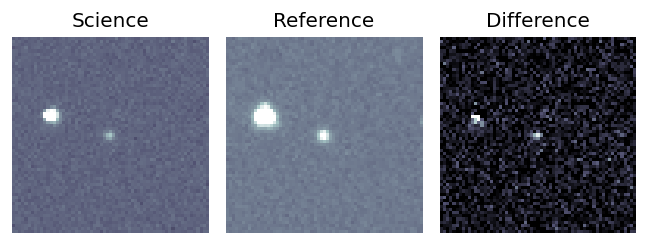
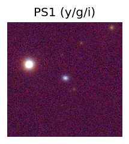
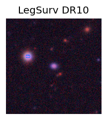
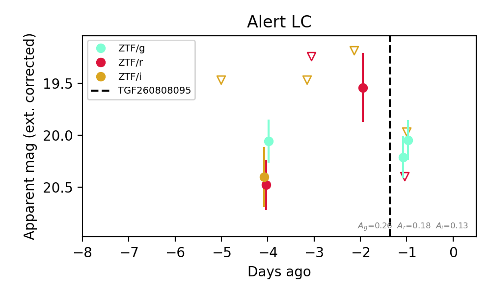

Candidate List 20260809Last night — ZTF: 675 passed basic cuts (211 young) · LSST: 0 passed basic cuts (0 young)Previous Day Next Day
Section 1: New Sources (age<1d) Section 2: Old (1-5d) sources observed last nightplaceholder
Section 1: New Afterglow/FBOT Cands Last Night (0)
Section 2: Older Sources Observed Last Night (4)
0. [ZTF] ZTF26ablsebw (Afterglow?) [Back to Top] [Share] [Trigger Swift] [Fritz Alert] [Fritz Source] [Lasair]RA, Dec: 5.07927, -9.97055 0h20m19.03s, -9d-58m-13.97sGalactic (l, b): 98.3061, -71.33886 ext(g-r) = 0.042


TESS: Sectors [ 3 42 70]
SDSS (<15 kpc):Found SDSS phot-z: z=0.09; peak abs mag = -20.15
PS1: 0 sources in 3 arcsec
LegacySurvey: 1 sources in 3 arcsec Closest: d = 0.39 arcsec, 141.2 deg (east of north) photoz=0.16 (68% bounds 0.12, 0.21), type=REX peak abs mag (ext. corrected) = -21.38 (68% bounds -20.87, -22.05)

Extinction-corrected gr color:
From alerts: -0.21 +/- 0.07 mag
Extinction-corrected gi color:
From alerts: -0.55 +/- 0.09 mag
Extinction-corrected ri color:
From alerts: -0.34 +/- 0.1 mag
Rise Rate:
g: 0.18 mag/day
r: 0.16 mag/day
i: 0.11 mag/day
Fade Rate:
g: 0.39 mag/day
1. [ZTF] ZTF26abmabrc (FBOT?) [Back to Top] [Share] [Trigger Swift] [Fritz Alert] [Fritz Source] [Lasair]RA, Dec: 25.64318, -2.82362 1h42m34.36s, -2d-49m-25.04sGalactic (l, b): 151.83473, -62.78994 ext(g-r) = 0.024


TESS: Sectors [ 3 30 70 97 108]
PS1: 0 sources in 3 arcsec
LegacySurvey: 1 sources in 3 arcsec Closest: d = 0.28 arcsec, 163.5 deg (east of north) photoz=0.39 (68% bounds 0.15, 0.94), type=EXP peak abs mag (ext. corrected) = -23.56 (68% bounds -21.29, -25.89)

Extinction-corrected gr color:
From alerts: -0.32 +/- 0.11 mag
Extinction-corrected gi color:
From alerts: -0.6 +/- 0.21 mag
Extinction-corrected ri color:
From alerts: -0.42 +/- 0.2 mag
Rise Rate:
g: 0.24 mag/day
r: 0.16 mag/day
i: 0.1 mag/day
Fade Rate:
2. [ZTF] ZTF26abmqjhr (Afterglow?FBOT?) [Back to Top] [Share] [Trigger Swift] [Fritz Alert] [Fritz Source] [Lasair]RA, Dec: 355.85775, 4.35829 23h43m25.86s, 4d21m29.83sGalactic (l, b): 92.80564, -54.48656 ext(g-r) = 0.085


TESS: Sectors [42 70]
SDSS (<15 kpc):Found SDSS phot-z: z=0.17; peak abs mag = -20.03
PS1: 0 sources in 3 arcsec
LegacySurvey: 1 sources in 3 arcsec Closest: d = 0.16 arcsec, 313.4 deg (east of north) photoz=0.18 (68% bounds 0.16, 0.2), type=REX peak abs mag (ext. corrected) = -20.22 (68% bounds -20.01, -20.47)

Extinction-corrected gr color:
From alerts: -0.27 +/- 99 mag
Extinction-corrected gi color:
From alerts: 0.16 +/- 99 mag
Extinction-corrected ri color:
From alerts: 0.36 +/- 99 mag
Rise Rate:
g: 0.03 mag/day
r: 0.45 mag/day
Fade Rate:
r: 0.95 mag/day
3. [ZTF] ZTF26abmubuy (Afterglow?) [Back to Top] [Share] [Trigger Swift] [Fritz Alert] [Fritz Source] [Lasair]RA, Dec: 7.46226, -0.43102 0h29m50.94s, 0d-25m-51.67sGalactic (l, b): 111.05571, -62.8039 WARNING: -3.36 deg from ecliptic plane ext(g-r) = 0.022


TESS: Sectors [42 43 70]
PS1: 0 sources in 3 arcsec
LegacySurvey: 1 sources in 3 arcsec Closest: d = 7.06 arcsec, 333.5 deg (east of north) photoz=0.95 (68% bounds 0.67, 1.18), type=REX peak abs mag (ext. corrected) = -24.28 (68% bounds -23.36, -24.88)

Extinction-corrected gr color:
From alerts: 0.1 +/- 0.22 mag
Consistent with synchrotron, g-r>0!
Rise Rate:
g: 0.06 mag/day
r: 0.54 mag/day
Fade Rate: